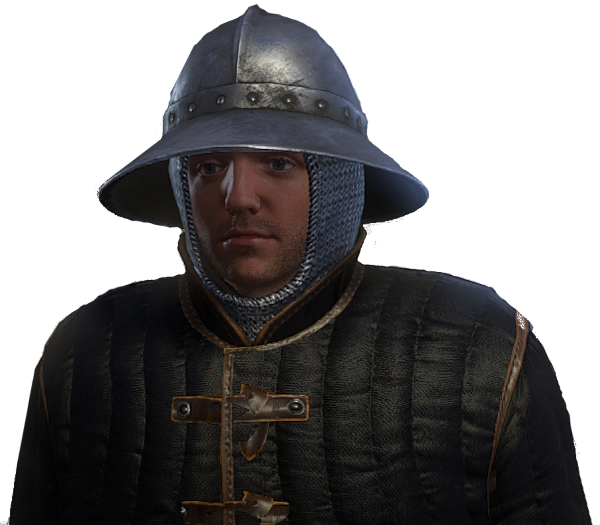

The Game
Kingdom come is a rpg medieval game focus in realism, cover by a amazing story and a beutiful world (yeah i played and lovety), Bohemia in 1400's is most impressive than you can imaginate in the beginner, KCD prove it.
A little a bit of personal opinion, the aspect more remarkable is the ambientancion, specially in the hardcore mode where is a more difficulty, but the game become deep imersive, is serious, stay lost in the woods is a real thing i get fear after this game, mainly when you win a hard fight (i'll leave that for you find out this fear).

The history, literally is a piece of cake in this banquet(if you don't like cake, think something you like 😊), how everything is conect and change along the time, how you become a warrior (or not in pacifist "mode" 😇) and get a little revange (i'll not talk about this more - it's spoiler), aaaaahhh mah' man you have to discover your self, really play the game.
Gameplay is a difficult point in KCD, not because it's bad, but it's different of other games in simmilar gender, it's harder and punitive for casual players in a first play, you have to get used to very different combat mode than usual, i myself, who have 400hrs in the game, am not used to using the combo mechanics, even i beat the game in hardcore mode(i made this save a perfecty save) and pacifist.
Bug's omg is the horsty part of this game, imaginate you complete a 90% of the game and you decide to finish the game and BAMM, a bug that possibly invalid your 200hrs save in hardcore mode that you made perfect, MY GOD the despair that day is indiscrible, fortunately i managed to fix it, the bug i mentioned is in the sequence of final quest, when you talk to Sir Divish and have an auto save that turn your screen fully black, I had to install a mod that let you save on the console, this fixed the bug.
The collectibles
Yes, if you are the type of player how loves collet all things in the game, KCD is perfect for you, now I show you some unique stuff.
This first is the part best of stealth suit for the players want everything, the unique form to obtain is in a timed quest, that an only NPC wear, you can killed him or knockout, but i only obtain for fashion, like in Dark Souls.
The second is a armor that have the colors of Skalitz, is more easy to obtain, but in my save one of the options is buggy, the other option is a battle, and you have to kill a ally soldier, yeah is awful, but is the olny way to obtain in my save.
Conclusion
In the principle i wanted to tell the how the final arc it happens, but it's difficult to tell something that have a lot of spoillers, so it's the end, i leave you whit a end credtis